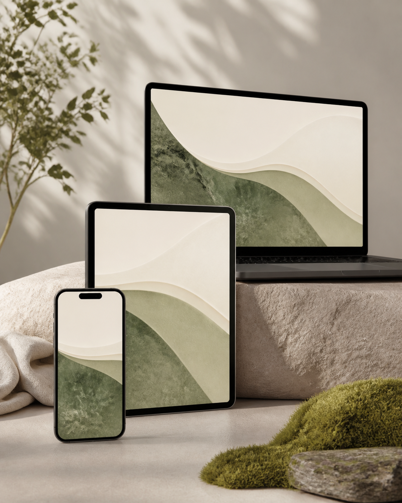

Princípio em focoLeitura com autonomia
Inclusão / autonomia / uso consciente
Experiências digitais não devem apenas funcionar. Devem incluir.

Função em destaqueInterface que informa, orienta e devolve controle.
Pesquise texto, teclado, tempo de interação, segurança e tecnologia assistiva.
02 — acesso como prática
A tecnologia só avança quando ninguém fica para trás.
/ UMA WEB PARA TODAS AS PESSOASAcessibilidade não é um detalhe acrescentado ao final. É reconhecer que autonomia, informação e participação também se constroem pela forma como desenhamos cada experiência digital.
03 — BIBLIOTECA DE FUNÇÕES
Um guia amplo, não fragmentado.
Explore as 24 diretrizes do AcessaWEB. Arraste a coleção, selecione um cartão ou use as setas para colocar cada função em destaque.
04 — LINHA DO TEMPO NORMATIVA

Modelo governamental2014
eMAG 3.1
Acessibilidade padronizada para serviços digitais públicos.
Referência oficial
eMAG 3.1 traduz acesso em prática pública.
TRADUÇÃO PRÁTICA